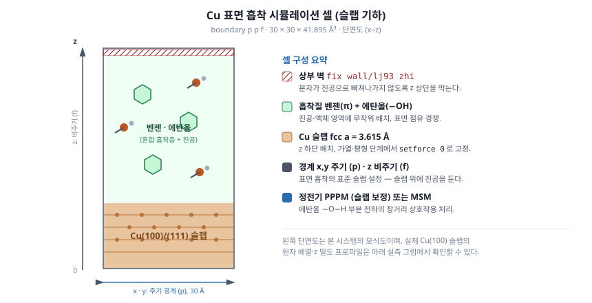
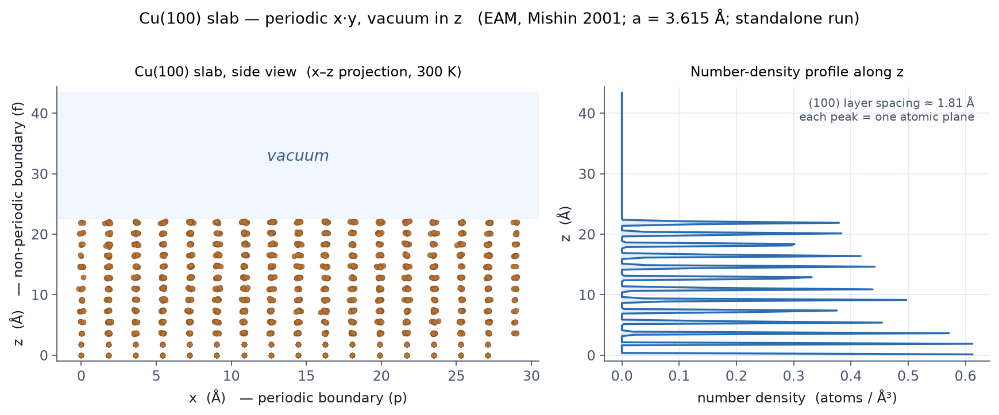

1.1 연구 동기
벤젠과 에탄올은 서로 다른 결합 양상을 갖는 대표적인 유기 분자이다. 벤젠은 비편극성(nonpolar) π-전자 시스템을 가지며, 에탄올은 극성(polar) 수산기(-OH)를 통해 수소 결합 네트워크를 형성한다. 두 분자가 혼합된 액체상이 전이금속 표면과 접촉할 때, 어느 분자가 우선적으로 흡착되는가는 분리 공정과 촉매 설계에서 중요한 문제이다.
구리(Cu)는 채워진 3d 궤도를 가지므로 가스상 벤젠 분자의 π-궤도와의 도너-억셉터 상호작용을 형성할 수 있는 대표적인 fcc 금속이다 (Cu의 [Ar]3d¹⁰4s¹ 전자 배치를 참고). 한편 에탄올은 표면 위에서 수산기를 통한 수소 결합과 메틸기를 통한 약한 분산력으로 흡착하므로, 두 분자가 동시에 존재할 때 표면 점유 경쟁이 발생한다.
1.2 시뮬레이션 셀 기하
본 가이드의 시스템은 다음과 같은 슬랩 기하(slab geometry)를 채택한다.
- 박스 크기: 30 × 30 × 41.895 ų
- 경계 조건: x, y 방향 주기적; z 방향 비주기 (
boundary p p f) - 금속 슬랩: z 축 하단에 fcc Cu 슬랩 배치 (격자 상수 a = 3.615 Å)
- 유기 분자: Cu 슬랩 위 진공-액체 영역에 무작위로 배치된 벤젠과 에탄올
z 축 비주기 경계는 표면 흡착 시뮬레이션의 표준 설정이다. 이는 슬랩 위에 진공 영역을 두어 두 분자가 표면으로 유입/탈리하는 과정을 자연스럽게 관찰하기 위함이다.

wall/lj93 벽이 있다. x·y는 주기 경계(p),
z는 비주기 경계(f)다. 그림은 시스템 구성 모식도이며, 실제 Cu(100) 슬랩의
원자 배열은 아래 그림 2에서 확인할 수 있다.
Cu 슬랩의 결정학적 면
데이터 파일에서 Cu 원자는 (0, 0, 0), (0, 0, 3.615), (0, 0, 7.230), … 와 같이 3.615 Å 간격으로 배치되어 있다. 이는 fcc Cu의 격자 상수 (experimental: 3.6147 Å at 298 K, Davey 1925)와 일치한다. 슬랩의 노출면이 (100) 인지 (111) 인지는 슬랩을 자를 때의 결정 방향에 따라 결정된다.
| 결정면 | 표면 원자 밀도 (atoms/Ų) | 표면 에너지 (J/m²) | 특징 |
|---|---|---|---|
| Cu(100) | 0.153 | ~1.78 | 정사각형 배열, hollow site |
| Cu(111) | 0.177 | ~1.79 | 육각형 배열, 가장 안정 |
표면 에너지 값은 Vitos 외 (1998), Surf. Sci. 411, 186 에서 발췌하였다.

boundary p p f의 슬랩+진공 구조를
수치로 확인할 수 있다. 본 그림은 금속 슬랩 단독 실행이며, 본문의 생성 동역학은
이 슬랩 위에 유기 분자를 올리고 Cu는 고정한다.
1.3 표면 흡착의 분자동역학적 측면
본 시스템에서 다루는 흡착은 다음 세 가지 기여로 분해할 수 있다.
-
분산 인력 (London dispersion): Cu 원자와 유기 분자의 비결합 12-6 Lennard-Jones 항으로 모형화된다. 본 가이드에서는 Heinz et al. (2008) 의 INTERFACE-FF 파라미터를 사용한다. Cu-Cu의 경우 ε = 4.72 kcal/mol, σ = 2.616 Å.
-
정전기 상호작용 (Coulomb): 에탄올의 -O-H 결합은 큰 부분 전하 (q_O ≈ -0.7, q_H ≈ +0.435) 를 가지므로 장거리 정전기 처리가 필수적이다. PPPM 또는 MSM이 사용된다.
-
π-d 궤도 상호작용: 고전 힘장에서는 이 효과를 명시적으로 다루지 않으며, LJ 파라미터에 흡수되어 간접적으로 표현된다. 양자역학적 효과를 정확히 포착하려면 DFT 또는 ReaxFF가 필요하지만, 본 가이드는 INTERFACE-FF의 LJ 파라미터가 표면 장력에 fit되어 있다는 점에서 계면 거동을 정량적으로 재현할 수 있다고 가정한다.
1.4 다섯 단계 시뮬레이션 프로토콜의 화학적 정당화
본 가이드는 다음 다섯 단계의 시뮬레이션 프로토콜을 유지한다.
| 단계 | 명칭 | 목적 | 화학적 의미 |
|---|---|---|---|
| 1 | 소프트 완화 (Soft potential relaxation) | 원자 중첩 해소 | 초기 무작위 배치에서 발생하는 비물리적 큰 힘 제거 |
| 2 | 에너지 최소화 (Minimization) | 국소 최소점 도달 | 0 K 정적 평형 구조 (potential energy surface의 minimum) |
| 3 | 단계적 가열 (Staged heating) | 0.1 K → 300 K 점진 가열 | 운동 에너지를 천천히 주입하여 구조 붕괴 방지 |
| 4 | 평형화 (Equilibration) | 300 K NVT 평형 | 열역학적 평형 분포 확보, 자기 상관 시간 이상 |
| 5 | 생성 동역학 (Production) | 통계 수집 | 평형 앙상블 평균 계산 |
각 단계의 상세한 화학적 정당화는 5단계 프로토콜 문서에서 다룬다.
1.5 분석 대상 물리량
본 시뮬레이션에서 추출하는 주요 물리량은 다음과 같다.
- 방사 분포 함수 (Radial Distribution Function, g(r)): 분자 간 구조 상관
- 밀도 프로파일 (z 방향): 계면에서의 분자별 분포
- 분리 효율 지수 (Separation Efficiency Index, SEI): 0 (완전 혼합) ~ 1 (완전 분리)
- 흡착 에너지: 표면 결합 강도의 정량 지표
- 계면 장력 (Irving-Kirkwood 방법): 계면의 열역학적 안정성
상세 분석 방법은 분석 방법 문서에서 다룬다.
참고문헌
-
H. Heinz, R. A. Vaia, B. L. Farmer, R. R. Naik, "Accurate Simulation of Surfaces and Interfaces of Face-Centered Cubic Metals Using 12-6 and 9-6 Lennard-Jones Potentials", J. Phys. Chem. C 112, 17281-17290 (2008). DOI: 10.1021/jp801931d
-
L. Vitos, A. V. Ruban, H. L. Skriver, J. Kollár, "The surface energy of metals", Surf. Sci. 411, 186-202 (1998). DOI: 10.1016/S0039-6028(98)00363-X
-
J. H. Irving, J. G. Kirkwood, "The Statistical Mechanical Theory of Transport Processes. IV. The Equations of Hydrodynamics", J. Chem. Phys. 18, 817-829 (1950). DOI: 10.1063/1.1747782
-
W. Davey, "Precision Measurements of the Lattice Constants of Twelve Common Metals", Phys. Rev. 25, 753-761 (1925). DOI: 10.1103/PhysRev.25.753